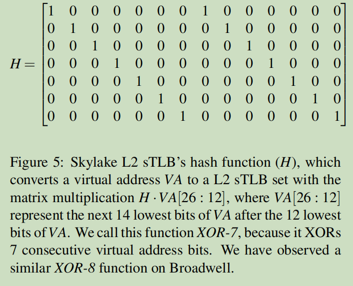

Translation Leak-aside Buffer: Defeating Cache Side-channel Protections with TLB Attacks
Table of Contents
-
<<<<<<< HEAD
- 1. 背景
- 1.1. Cache side-channel防御
- 1.1.1. 隔离cache set
- 1.1.2. 隔离cache line
- 1.1.3. 在敏感函数执行时隐藏data cache。 =======
- 1. TLBleed
- 2. 背景
- 2.1. Cache side-channel防御
- 2.1.1. 隔离cache set
- 2.1.2. 隔离cache line
- 2.1.3. 在敏感函数执行时隐藏data cache。 >>>>>>> 0ca17bfdbaaf2e373c931cdfd53818ff1f120a72
<<<<<<< HEAD
- 2.1. Cache side-channel防御
- 2. 威胁模型
- 3. 攻击概述
- 4. 监控TLB
- 5. 超线程能否观察到TLB
- 6. 无特权TLB监控
- 7. 时间性分析
- 7.1. 信号分类
- 7.2. 识别目标TLB set =======
- 3. 威胁模型
- 4. 攻击概述
- 5. 监控TLB
- 6. 超线程能否观察到TLB
- 7. 无特权TLB监控
- 8. 模拟
- 8.1. TLB set 识别
- 8.2. 攻击EdDSA
- 8.3. 攻击RSA
- 8.4. 对抗软件防御
- 8.5. 对抗Intel CAT
- 8.6. 对抗Intel TSX
- 8.7. TLB 转换通道 >>>>>>> 0ca17bfdbaaf2e373c931cdfd53818ff1f120a72
- 1.1. Cache side-channel防御
1 背景
1.1 Cache side-channel防御
1.1.1 隔离cache set
1.1.2 隔离cache line
1.1.3 在敏感函数执行时隐藏data cache。
1 TLBleed
文章给这种攻击取的名字
2 背景
2.1 Cache side-channel防御
2.1.1 隔离cache set
2.1.2 隔离cache line
2.1.3 在敏感函数执行时隐藏data cache。
2 威胁模型
3 威胁模型
受害者进程和攻击者进程共享一个核心。
3 攻击概述
4 攻击概述
- 如何监控TLB sets，或者虚拟内存在现代处理器中的多级TLBs中的映射方式。
- 相同核心上的不同进程如何共享TLB sets。
- 无特权进程（无法访问性能计数器，TLB shootdown中断）能否有效地监控TLB的活动。
- 攻击者能否通过4KB粒度的data页实现有效的攻击，现存的防御方法对攻击的影响。
4 监控TLB
5 监控TLB
- 使用Intel Performance Counters（PMCs）来获取TLB各级发生TLB miss时的细粒度信息。
- 具体Linux perf 事件框架来监控。
- dtlb_load_misses.stlb_hit
- dtlb_load_misses.miss_causes_a_walk
4.1 线性映射TLB
5.1 线性映射TLB
定义映射函数为hash函数
假设TLB为线性映射，映射函数为
\begin{equation} targetset = page_{VA}\ mod\ s \end{equation}- 定义cache set数量为s, way数量为w。
- 固定s = 1, 2, …, 读取第ks+1个页，k = 0, 1, 2, …, 同时检查之前的页是否被驱逐，当发现驱逐时，记录s, 记w = k + 1。
- 最小的w为way数量，对应最小的s为cache set数量。
文章猜测Broadwell为4-way, 16-set L1 dTLB。
4.2 复杂映射TLB
5.2 复杂映射TLB
假设映射时使用xor获取虚拟地址的部分。
- 首先判断哪些虚拟地址属于一个set中。
- 这些虚拟地址的xor结果应该相同。
- 计算可能的xor,来得到结果。
文章计算得到xor hash矩阵为 
计算方式： \(H\cdot VA[26:12]\), VA[26:12]指低位26到低位13共计14个bit。
4.3 TODO TLB Caches之间的关系
5.3 TODO TLB Caches之间的关系
TLB caches之间是否存在包容关系，即L2 cache中是否有L1 cache中的内容。
测试方法：
- \(S_1 = \{ L1_{code}, L2 \}, S_2 = \{ L1_{data} \}\)
- 访问 \(S_1, S_2\) ，同时增加 \(S_1\) 的大小。
测试得到Skylake的TLB不是包容关系。
5 超线程能否观察到TLB
6 超线程能否观察到TLB
- 找到一个TLB set，通过之前得到的映射关系能够很方便找到。
- 在一个超线程中访问该TLB set, 在另一个超线程中访问所有的TLB set。
- 进行测量。
测试发现：
- L1 dTLB 和 L2 sTLB是共享的。
- L1 iTLB 不是共享的。
- L2 sTLB set number最高位会与超线程ID做异或。
6 无特权TLB监控
7 无特权TLB监控
performance counter需要超级用户。
类似Prime+Probe，通过访问目标，通过rdtsc和rdtscp指令进行观察。
测试：
- 分成3个测试集：
- 在L1 dTLB中，L1 hit。
- 部分不在L1 dTLB中，但是在L2 sTLB中, L1 miss but L2 hit。
- 大于L2 sTLB，也就是部分不在L2中，L2 miss。
- 所有地址映射到一个物理页中，避免CPU cache带来的影响。
- 测量时间。
测试显示存在鲜明的差别，可以用于监控TLB的行为。
7 时间性分析
文章通过程序访问TLB时产生的TLB set序列模式来识别函数和分支。
文章对libgcrypt中的ECC 乘法函数进行分析，发现其中的不同分支执行过程中的TLB访问序列存在明显不同。
7.1 信号分类
文章测试，发现可以利用TLB访问的延迟进行分类。
通过一个SVM进行3分类：mul, dup，和其他。
7.2 识别目标TLB set
由于实际运行过程中，ASLR会导致虚拟地址变化，从而影响对应的set。
因此需要对每个cache set进行测量，并识别出哪个cache set为目标set。
=======8 模拟
8.1 TLB set 识别
实验结果表明：TLBleed能够有效地识别出目标set，也就表明能够对抗ASLR。
8.2 攻击EdDSA
EdDSA：一个高效的椭圆曲线算法。
文章使用3分类器，识别duplication, addtion，和其他。对于其他，使用暴力遍历的方式进行猜测。
文章监控2ms的TLB活动。
实验结果：
- Skylake成功率99.8%
- Broadwell成功率98.2%
- Coffeelake成功率99.8%
8.3 攻击RSA
一种RSA实现，能够对抗FLUSH+RELOAD，但存在秘密依赖的数据追踪。
实验结果：
- 能够修复92%的RSA密钥。
8.4 对抗软件防御
测试程序活动与cache miss以及TLB miss之间是否存在依赖关系。
测试结果：
- 程序活动的增加对LLC miss没有影响。
- 程序活动的增加会增加TLB的miss。
- TLBleed对LLC miss的影响很小。
- TLBleed对TLB的miss影响很大。
结论：
- TLBleed会对LLC miss产生很小的影响，原因是因为TLB miss的增加导致MMU页表更频繁地访问cache。
- 对LLC的保护不会影响TLB miss。
8.5 对抗Intel CAT
测试结果：
- Intel CAT 不能抵御TLBleed。
8.6 对抗Intel TSX
测试结果：
- Intel TSX 不能抵御TLBleed。
8.7 TLB 转换通道
测试结果：
- 在空闲状态下，\(2.0\times 10^{-5}\) 错误率。
- 在高负载状态下，\(3.2\times 10^{-4}\) 错误率。
- 空闲状态下，7kBit带宽。
- 高负载状态下，3kBit带宽。
Created: 2021-12-02 Thu 14:32
=======Created: 2021-11-26 五 09:45
>>>>>>> 0ca17bfdbaaf2e373c931cdfd53818ff1f120a72